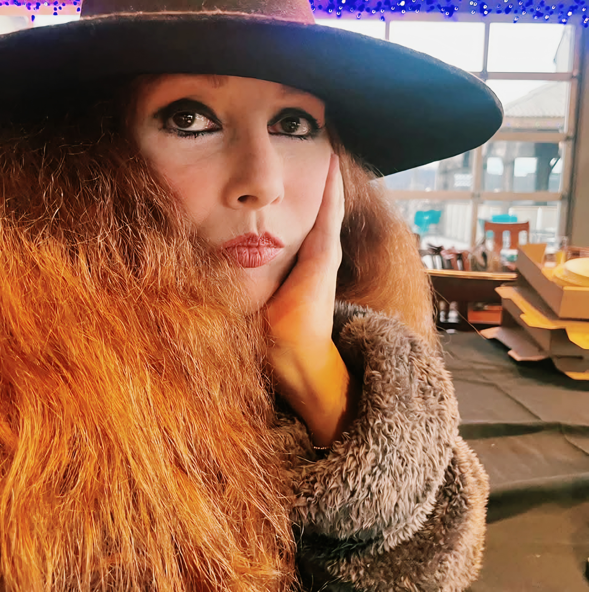

A multilingual background across Athens, London, New Orleans, and Washington, D.C., blending fine art, photography, and multimedia storytelling.

I was born in Athens, Greece, where I received a Franco-Hellenic education, attending elementary boarding school in the French canton of Switzerland and graduating from the French Ursuline Nun High School in Athens. I went on to study psychology for four years at Deree, the American College in Athens.
Driven by a passion for the arts, I moved to London to study professional makeup for stage, TV, and film at the Makeup Academy, followed by fine arts studies at Croydon College.
Upon returning to Greece, I managed my family’s custom men’s tailoring business while working as a makeup artist, stylist, and photographer for musicians and actors. Following the Greek economic crisis, I closed the business and moved to the United States in 2012 with my husband, Louis Selzer.
We first settled in New Orleans, where I returned to art and photography as a multimedia artist, while also earning certifications in New Mexico as a yoga teacher and gong player—eventually running my own yoga studio for five years. In 2016, we relocated to Washington, D.C., where I continue to live, work, and refine my digital image-making today. I am fluent in English, French, Italian, and Greek.